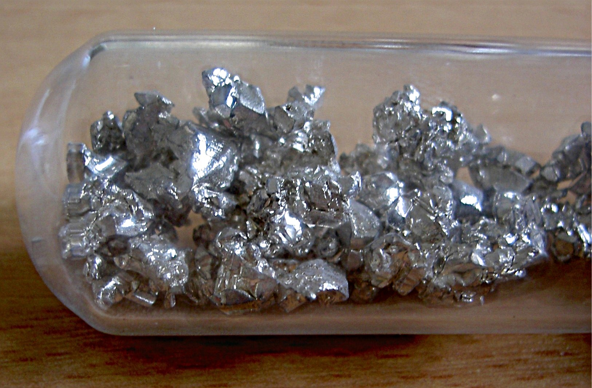

Kalcij je srebrna, sijoča in dokaj mehka kovina. Ko je izpostavljen zraku tvori sivo bel oksid.
Ko
je izpostavljen vodi bo ustvaril vodik. Kalcij je pomemben element za življenje na Zemlji in je peti
najpogostejši element v zemeljski skorji. Kalcij najdemo zlahka po vsej zemeljski skorji, večinoma je v
obliki kamnin in mineralov. Kalcijev karbonat je ena glavnih sestavin številnih kamnin in mineralov,
vključno z apnencem, marmorjem, kalcitom in kredo. Kalcij v svoji osnovni obliki ima le malo
industrijske
uporabe, vendar se njegove spojine z drugimi elementi pogosto uporabljajo. Pomembna spojina je kalcijev
oksid (CaO), ki mu pravimo tudi apno. Apno se uporablja za odstranjevanje onesnaženja in za čiščenje
vode.

Radij
Radij je srebrna, zelo radioaktivna kovina. Oddaja svetlobne žarke, zaradi katerih se sveti v
temi.
Je redek element in najdemo ga v uranovih rudah. Proizvaja se kot stranski produkt pridobivanja urana. V
stiku z dušikom v zraku reagira tako, da naredi temno prevleko. Reagira tudi z drugimi elementi in z
vodo.
Radij uporabljamo pri zdravljenju raka, zobnih pastah in v barvah.
Magnezij
V običajnih pogojih je magnezij lahka kovina srebrno bele barve.
Najdemo ga v morski vodi, zemeljski skorji in v spojinah z drugimi elementi.
Ob izpostavitvi zraku bo zatemnil in se zaščitil s tanko plastjo kisika.
Barij
Barij je mehka, srebrno-bela, kemično aktivna strupena kovina.
V čisti obliki je srebrno bela. Kovina se oksidira in jo je treba hraniti pod nafto ali drugimi
tekočinami, ki ne vsebujejo kisika.
Barij reagira v vodi ali alkoholu.
Uporablja kot "greben" v vakuumskih ceveh. Njegove spojine se uporabljajo v pigmentih, barvah,
steklarstvu, kot utežnih spojinah, pri proizvodnji gume, v strupih za podgane in v pirotehničnih
izdelkih.
Berilij
Berilij je zelo redka, lahka, krhka, a močna kovina. Ima eno najvišjih tališč od vseh lahkih
kovinskih elementov. Je tudi nemagneten in ima zelo visoko toplotno prevodnost. Najdemo ga v mineralih
beril in bertrandit in draguljih smaragd in akvamarin, vendar skoraj nikoli ni v čisti obliki. Večino
svetovnega berilija pridobivajo ZDA in Rusija, ki predstavljata skoraj dve tretjini svetovne proizvodnje
berilija. Uporablja se večinoma v visokotehnoloških ali vojaških področjih(npr. kot moderator in ščit v
jedrskih reaktorjih). Zaradi svoje posebne sposobnosti, da je rentgenskim žarkom prozoren, se uporablja
kot prevleka v oknih rentgenskih aparatov.
Berilij velja za rakotvorno snov, kar pomeni, da lahko pri ljudeh povzroči raka. Prav tako je strupen za
ljudi, z njim je treba ravnati previdno in ga nikoli ne okusiti ali vdihavati.
Stroncij
Stroncij je srebrno bele kovinske barve, z rahlim rumenkastim odtenkom. V stiku z zrakom
oksidira in dobi rumenkasto barvo. Pridobiva se iz svojih žil v obliki mineralov celestit ali celestin
in stroncijanit. njegova nahajališča so v sedimentnih tleh in v povezavi z žveplom. Topen v alkoholu in
kislinah. V vodi ni topen, saj z njo močno reagira. Stroncij, ko se fino razdeli, spontano gori v zraku.
Poleg tega se vžge, ko se segreje nad tališčem, in je lahko izpostavljen eksploziji plamena. Za
preprečevanje oksidacije stroncija je priporočljivo, da ga shranjujemo potopljenega v kerozin ali nafto.
Stroncij je treba hraniti v hladnem, dobro prezračevanem prostoru, stran od organskih in drugih lahko
oksidativnih materialov.
Kot zdravilo se uporablja več različnih oblik stroncija. Znanstveniki preizkušajo stroncijev ranelat, da
bi ugotovili, ali ga lahko jemljemo peroralno za zdravljenje redčenja kosti ( osteoporozo ).
Radioaktivni stroncij-89 se daje intravensko (IV) za raka prostate in napredovalega raka kosti.
Stroncijev klorid heksahidrat se doda zobni pasti za zmanjšanje bolečin v občutljivih zobeh.